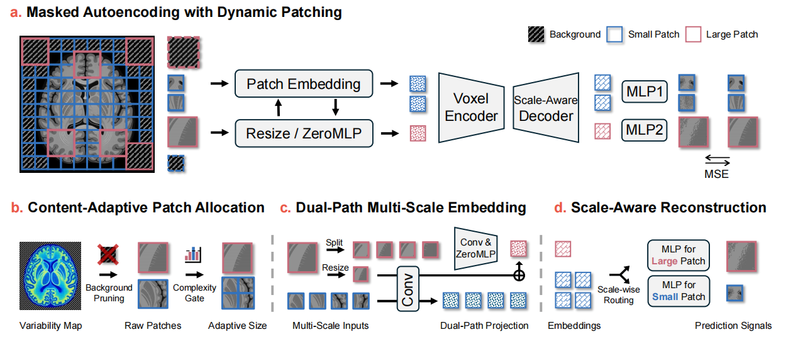
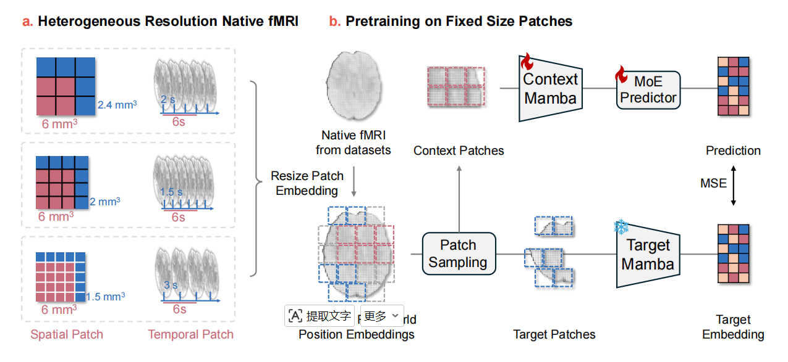
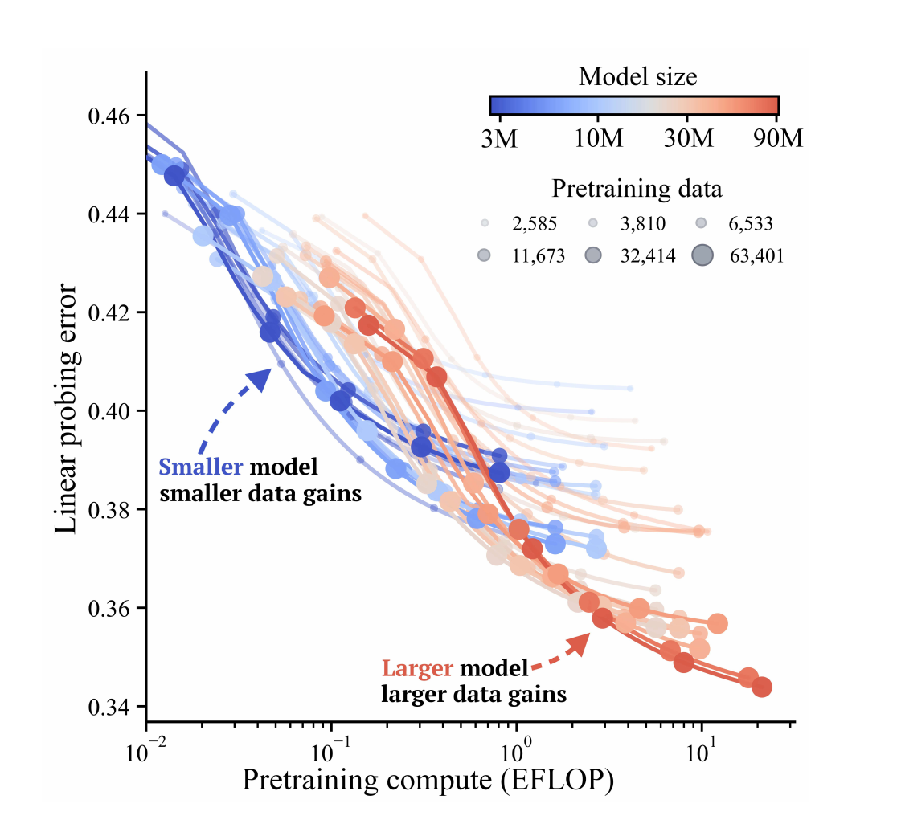
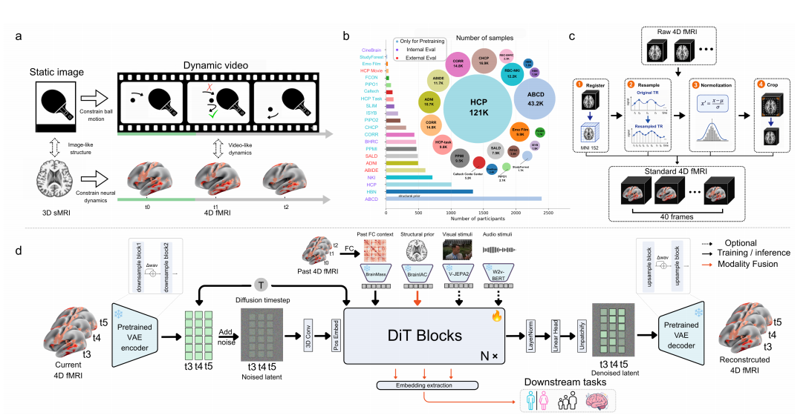
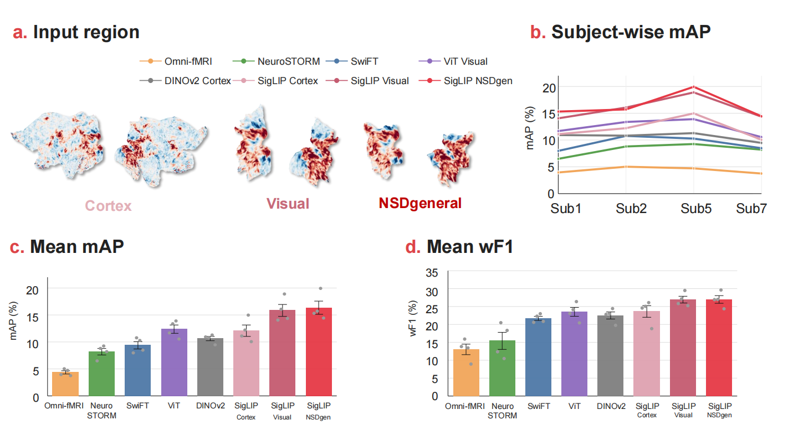
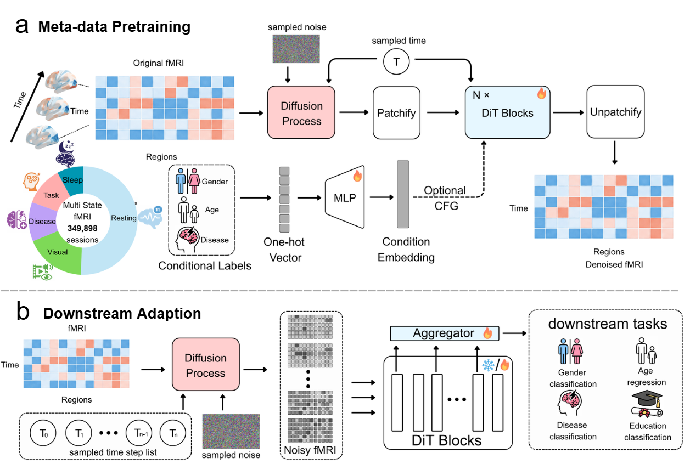
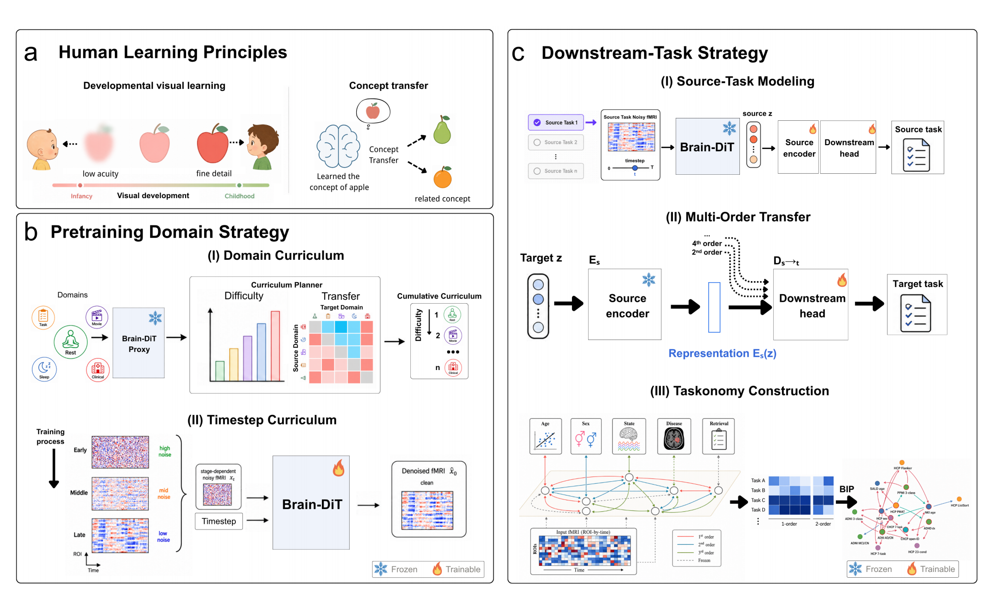
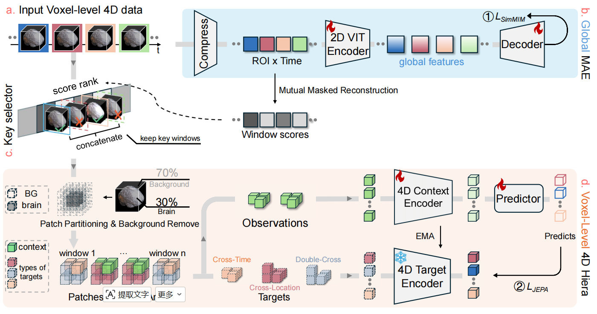

Omni-fMRIOmni-fMRI: A Universal Atlas-Free fMRI Foundation Model
Dynamic patching enables efficient, atlas-free representation learning directly from voxel-level fMRI.
I study how we can learn useful representations from the human brain.
I am an undergraduate in Biomedical Engineering at Shenzhen University, and a visiting research student at the Neural Computing and Control (NCC) Lab, SUSTech, advised by Prof. Quanying Liu.
My research focuses on NeuroAI, particularly foundation models and representation learning for fMRI. I am also exploring trustworthy AI systems with JEPA and uncertainty-aware learning.
More work from our team: fMRI Atlas
* Equal contribution · † Corresponding author

Omni-fMRIDynamic patching enables efficient, atlas-free representation learning directly from voxel-level fMRI.

FlexiBrainPhysical-unit patching and Mamba-JEPA learn native-space fMRI representations across different acquisition resolutions.

Scaling fMRI modelsA controlled scaling study reveals how data size, model capacity, and training duration jointly affect fMRI performance.

BrainWorldStructural MRI guides the generation of whole-brain fMRI sequences for modeling brain dynamics and learning transferable representations.

FlatCLIPA frozen image foundation model extracts fMRI representations from geometry-aware cortical flatmaps.

Brain-DiTMetadata-conditioned diffusion pretraining learns multi-scale fMRI representations across diverse brain states.

BrainTaskonomyMeasured relationships between fMRI domains and tasks guide pretraining curricula and budget-aware transfer learning.

SLIM-BrainSalient-window selection and hierarchical encoding reduce the data and memory costs of voxel-level fMRI modeling.
Visiting Research Student · NCC Lab
Advisor: Prof. Quanying Liu · Since July 2025
B.Eng. in Biomedical Engineering
Expected June 2027